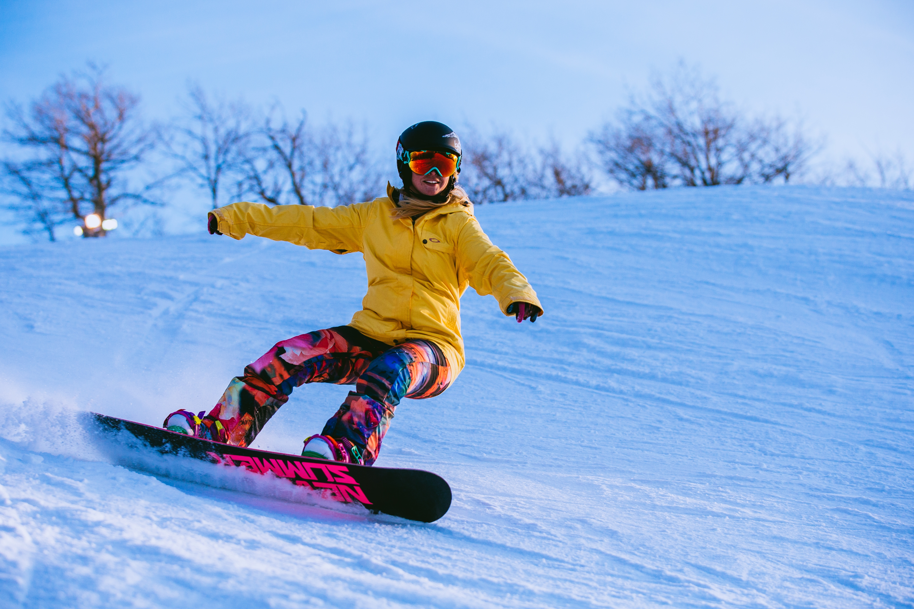
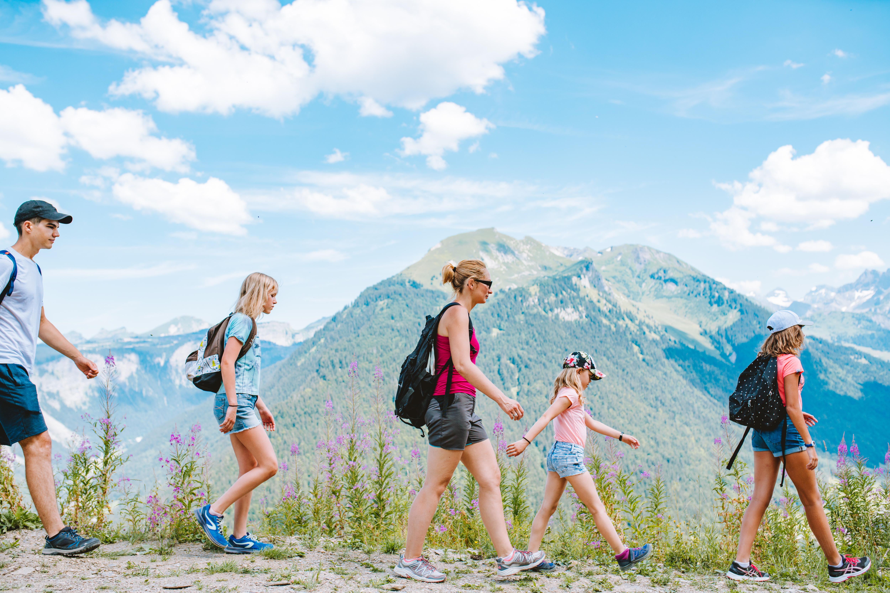
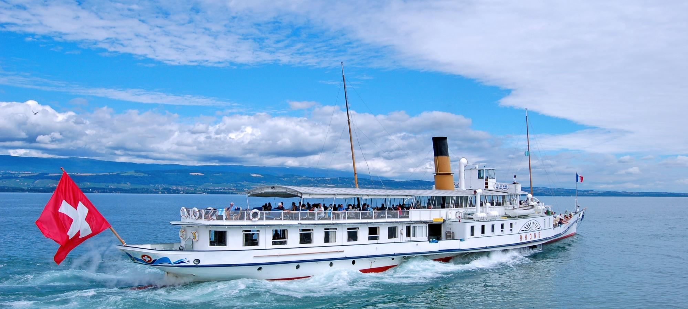
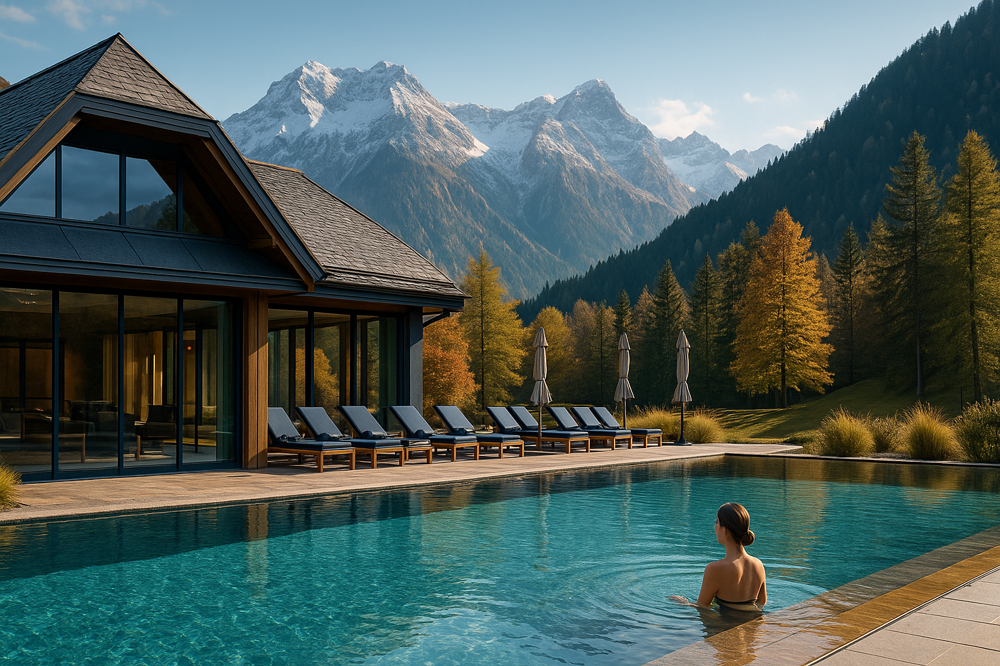
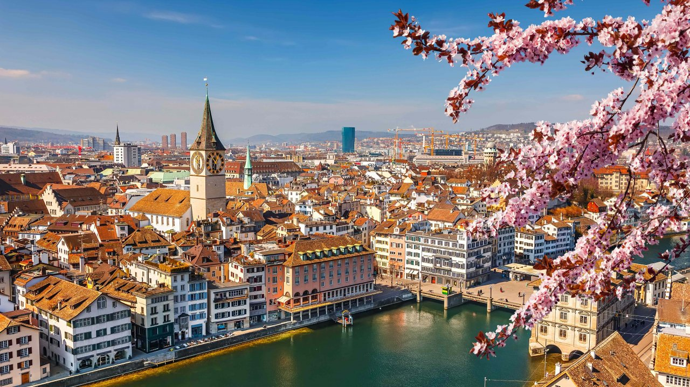

Introduction to Swiss Activities
Switzerland offers a diverse range of activities for all seasons and all travel styles. From world-class skiing and hiking in the Alps to lakeside relaxation and cultural experiences in charming towns, Switzerland is an adventurer's paradise. The country's excellent infrastructure, safety, and natural beauty make it an ideal destination for outdoor enthusiasts and wellness seekers alike.
Winter Sports

Skiing & Snowboarding
Switzerland boasts some of Europe's finest ski resorts. Popular destinations include Verbier, Zermatt, and St. Moritz. The season runs from December through March, with reliable snow conditions and world-class facilities. Resorts cater to all skill levels, from beginners to Olympic-standard slopes.
Cross-Country Skiing
Scenic cross-country skiing trails wind through valleys and forests. Engadin Valley and the Swiss plateau offer numerous groomed trails perfect for both leisurely outings and fitness pursuits.
Ice Skating & Curling
Many Swiss towns have outdoor ice rinks in winter. St. Moritz and other resorts offer the unique experience of playing curling and ice hockey on frozen lakes.
Snowshoeing
A gentler alternative to skiing, snowshoeing trails traverse the Alpine landscape, offering peaceful communion with nature and stunning mountain views.
Summer & Mountain Activities

Hiking & Trekking
Switzerland's extensive network of well-marked hiking trails caters to all fitness levels. Popular routes include the Tour of Mont Blanc, Jungfrau trails, and the scenic paths around Interlaken. Summer (June–September) is peak hiking season.
Mountain Biking
The Alps offer thrilling mountain biking trails with breathtaking descents. E-biking has become increasingly popular, making alpine exploration accessible to more cyclists.
Rock Climbing & Via Ferrata
Climbers flock to regions like Chamonix (nearby) and Swiss climbing areas for challenging rock routes. Via Ferrata (iron way) paths combine hiking with climbing, offering a thrilling but safe alpine experience.
Paragliding & Hang Gliding
Interlaken is a world-renowned paragliding destination. The thermals and ridge lift in the Alps create ideal conditions for exhilarating flights with panoramic views.
Canyoning
Adventure seekers can rappel down waterfalls and traverse mountain streams in narrow canyons. Popular canyoning sites include locations in the Bernese Oberland and Uri.
Water Activities

Swimming & Lake Activities
Switzerland's pristine lakes—Lake Geneva, Lake Neuchâtel, Lake Zurich—offer swimming, paddleboarding, kayaking, and sailing. Summer water temperatures in shallow bays reach comfortable levels for swimming.
Windsurfing & Kitesurfing
Lake Neuchâtel and Lake Geneva are popular spots for windsurfing, particularly for beginners and intermediate enthusiasts seeking consistent wind conditions.
Rafting & Kayaking
The Reuss, Aare, and Rhine rivers offer exciting rafting and kayaking opportunities. Difficulty ranges from family-friendly float trips to challenging whitewater descents.
Fishing
Switzerland's lakes and rivers are renowned for trout and pike fishing. Fishing permits and guided trips are readily available throughout the country.
Wellness & Relaxation

Spa & Thermal Resorts
Switzerland offers world-class spa facilities and thermal baths. Leukerbad, Bad Ragaz, and other resorts feature geothermal pools and comprehensive wellness programs.
Yoga & Meditation Retreats
Mountain villages and lakeside towns host yoga retreats and meditation centers, offering peaceful environments for personal wellness journeys.
Alpine Wellness Lodges
Many mountain resorts combine hiking access with luxury spa facilities, allowing visitors to balance active adventures with restorative relaxation.
Cultural & Urban Activities

City Tours & Museums
Zurich, Bern, Lucerne, and Geneva offer rich cultural experiences with world-class museums, galleries, and historic landmarks. City trams and walking tours provide accessible exploration.
Scenic Trains & Railway Journeys
The Glacier Express, Bernina Express, and Jungfrau Railways combine transportation with stunning alpine scenery. These scenic journeys are experiences in themselves.
Cheese & Chocolate Tastings
Visit Swiss cheese dairies and chocolate factories to learn about production and taste artisanal products. Gruyères and Appenzell are famous cheese-making regions.
Open-Air Markets & Shopping
Swiss towns host vibrant farmers' markets and artisan fairs. High Street shopping in cities like Zurich and Geneva showcases global and local brands.
Best Time & Practical Tips
Peak Seasons: Summer (June–September) for hiking and lake activities; December–February for skiing.
Shoulder Seasons: Spring (April–May) and autumn (September–October) offer mild weather and fewer crowds.
Booking Tips: Reserve accommodations and activity guides in advance, especially during peak season. Consider a Swiss Travel Pass for unlimited train, bus, and lake transport.
Safety: Switzerland has excellent safety standards and rescue services. Always follow local guidelines and weather forecasts before outdoor adventures.